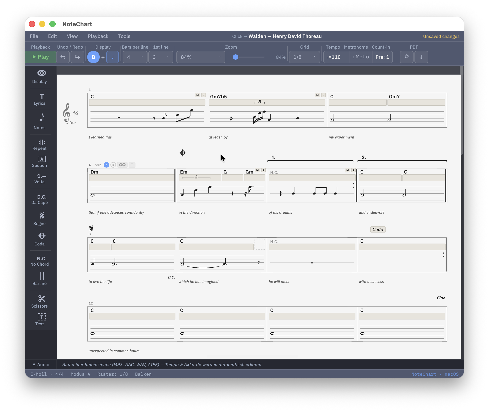

Konzept
Alte Zöpfe neu flechten
Lead Sheets haben sich seit Jahrzehnten kaum verändert — und die Software auch nicht. NoteChart bringt ein vollständig neues Konzept mit, das von Grund auf für Musiker gedacht ist: schnell für Einsteiger, mächtig für Profis, ohne dass man sich durch Menüs kämpfen muss.
Nur Akkorde? Geht. Mit Rhythmus? Geht. Mit vollständiger Melodie? Auch das. So viele Seiten wie man braucht. NoteChart passt sich an — nicht umgekehrt.
Wer bisher mit iReal Pro unterwegs war: herzlich willkommen in 2026. Euer Abo läuft ja noch bis Ende des Monats.

Nur Akkorde
Schnell ein Chart hinwerfen, ohne Noten, ohne Aufwand. Für die Probe, für die Session, für unterwegs.
Mit Rhythmus
Wer mehr will, bekommt mehr — rhythmische Information direkt im Chart, klar und lesbar.
Mit Melodie
Vollständige Notation wenn nötig — pro Takt zuschaltbar, nicht aufgezwungen. Das Notensystem erscheint genau dort, wo es gebraucht wird.
Audio-Import
Song reinziehen, BPM wird erkannt, Akkordvorschläge kommen automatisch — bestätigen oder korrigieren, fertig.
PDF-Export
Druckfertige Charts, so viele Seiten wie nötig, mit wählbarem Layout und Kopfbereich.
Kompatibel
MusicXML Import und Export. iReal Pro Nutzer exportieren ihre Charts als MusicXML — der Import in NoteChart funktioniert direkt.